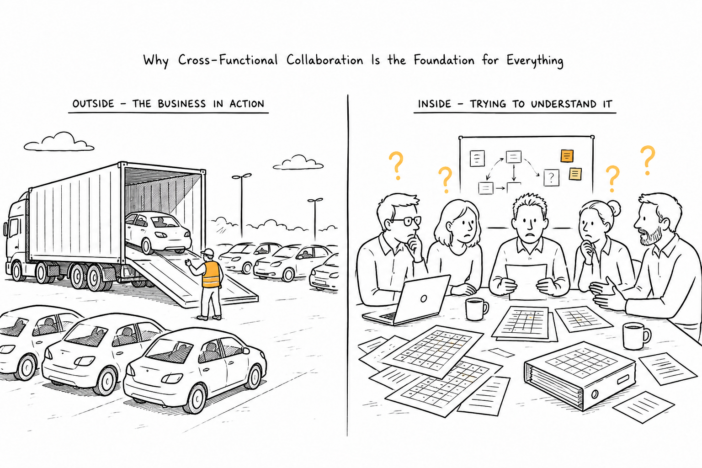

2 Shared Understanding

In 2013, I joined a large legacy modernization program at one of Europe’s most successful car rental companies. Most of the core system was still written in COBOL. Hard to maintain. Hard to evolve. Like many modernization projects, the obvious goal was to replace the old technology with something more modern.
At least that’s what I thought when I joined the project.
I became part of the Infleet team. Our mission wasn’t only to modernize the existing system. We also wanted to simplify the entire infleet process and make it less error-prone. Looking back, I think that second part was much more interesting than the first, although I certainly didn’t realize it at the time.
One of the team’s biggest challenges was matching newly delivered vehicles to the yearly orders made by the purchasing department.
You might think that this should be a solved problem. Purchase orders cars. Manufacturers deliver cars. Someone confirms that everything arrived and puts the vehicles into service.
That’s not how the business worked.
Purchase didn’t negotiate contracts for individual vehicles. They negotiated yearly contracts for vehicle models with different manufacturers. Every month, trucks arrived with new vehicles, often with different equipment or model variants than originally expected. As long as the delivered vehicles fulfilled the contract, the manufacturer had done nothing wrong.
Infleet had a completely different problem.
Their work only started once those physical vehicles arrived at one of the rental locations. Someone had to figure out which delivered vehicle belonged to which ordered model pool. There was no electronic contract linking one to the other. Most of that work happened manually.
Every two weeks, people from Purchase, Infleet, Outfleet and Controlling met in a room full of Excel sheets. Each department had its own numbers. The goal was always the same: compare everything and find out whether the company had actually received what it had ordered.
You might imagine how well that worked.
We always joked that someone could probably operate a small shadow rental business with vehicles nobody would notice were missing. It was one of those engineering jokes that becomes funnier the longer you work on the system, because everyone knows there is more truth in it than they’d like to admit.
Why am I telling you this?
You see, it’s thirteen years ago and I can still feel the pain.
To be honest, I don’t remember much of the code anymore.
What I do remember are the conversations. Sitting together with the people from Infleet. Listening to them explain why things worked the way they did. Walking over to the Purchase team because our understanding didn’t quite match theirs. Realizing that two departments could use almost the same words while talking about completely different things.
Before joining the project I had already read Eric Evans’ Domain-Driven Design (Evans 2003). In fact, reading the “Blue Book” was one of the requirements for joining the team. So the ideas weren’t new to me. I already knew what a Domain Expert was. I knew about Ubiquitous Language and Bounded Contexts.
What the project gave me was something completely different.
It gave those concepts real people.
Suddenly, Domain Experts weren’t a paragraph in a book anymore. They were the people sitting next to me every day, patiently explaining why Purchase thought about vehicle models while Infleet cared about physical vehicles. Ubiquitous Language stopped being a modeling concept and became something we constantly struggled with. Every conversation either increased or reduced our shared understanding of the business.
Looking back, that’s probably the biggest thing I took away from those two years.
Since then, direct collaboration with domain experts has become non-negotiable for me. Every project I’ve joined afterwards started with the same question: How do we get the right people into the same conversation? Because once that works, many of the technical decisions suddenly become much easier.
It also changed the way I approached conversations with domain experts.
When I joined the project, I assumed that understanding the business meant learning the business terminology. It didn’t take long to realize that things were a little more complicated than that.
Take the word vehicle.
It sounds like a perfectly reasonable business term. In fact, I think most developers would happily create a Vehicle class, a Vehicle table and probably a VehicleService without thinking twice about it.
That’s exactly what the legacy system had done.
The database contained more than five thousand tables, all somehow connected to a handful of central concepts. Vehicle was one of them. Looking at the schema, you could easily get the impression that the business revolved around vehicles.
It didn’t.
The longer we worked with the different departments, the more we realized that every one of them looked at the same business from a different perspective.
Purchase didn’t really care about physical vehicles. Their job was negotiating contracts for vehicle models and making sure the company bought the right fleet for the coming year.
Infleet had a completely different perspective. Their work only started once physical vehicles arrived at one of the rental locations.
Damage Management looked at the same vehicle again, but from yet another angle. For them, it often represented an insurance case waiting to be clarified.
The interesting part is that nobody ever argued about those different perspectives.
They simply existed.
The people in the departments had worked that way for years. They instinctively knew what another colleague meant when talking about a vehicle.
We didn’t.
As developers, we had to learn that understanding the business wasn’t about memorizing terminology.
It was about understanding who was using a particular term, when they were using it and why they were looking at the business from that perspective.
Only then did the conversations start making sense.
Reading about concepts like Ubiquitous Language or Bounded Contexts is one thing. Sitting in a meeting where two departments unknowingly use the same word for different concepts is something completely different. That’s when those concepts stop being theory.
There was another observation that stayed with me long after the project had finished.
One of my colleagues spent almost two years reading COBOL code.
His job was to understand what the existing system actually did and document its behaviour in Word. Those documents then became the basis for discussions with domain experts. Sometimes they confirmed that everything was correct. Sometimes they told us that the system had behaved differently for years than the business actually expected. And every now and then they looked at each other because nobody was completely sure anymore.
I still find that fascinating.
Today we’d probably use Event Storming, Event Modeling or another collaborative modeling technique. Back then, Word documents were simply the best tool we had.
The interesting part wasn’t the tool anyway.
It was the conversations the documents enabled.
One thing became obvious very quickly.
Nobody could tell the complete story.
Purchase could explain purchasing.
Infleet could explain infleet.
Our COBOL expert could explain what the system did.
But none of them could explain the entire business from end to end.
That’s why those Word documents became so valuable. They weren’t documentation in the traditional sense. They became a place where different pieces of the story slowly came together. Every review with domain experts filled another gap. Every discussion corrected another assumption. Bit by bit we developed something that nobody had when the project started: a shared understanding of how this part of the business actually worked.
I didn’t appreciate that at the time.
I thought we were documenting a legacy system so that we could replace it.
Only later did I realize what we were actually documenting Business knowledge.
The source code happened to be one place where parts of that knowledge still existed, but it was only one part of the story. Another part lived in the heads of experienced employees. Some of it was written down in old documents. Some of it had already disappeared completely. Every workshop, every review session and every discussion helped us recover another small piece.
Looking back, I don’t think the biggest challenge was replacing COBOL.
The biggest challenge was understanding the business well enough that we could confidently change it.
Only then could we start modernizing the software.
So what were we actually creating during those two years?
Today, I’d simply call it shared understanding.
I don’t mean that everyone suddenly knew everything. That’s impossible in a business of that size, and even after two years I only understood a tiny part of it. Shared understanding doesn’t require everyone to know everything. It means that the people working together on a business capability develop the same mental model of their part of the business. They gradually learn to speak the same language, understand the same concepts and, just as importantly, know where the boundaries of their own understanding are.
Looking back, that’s exactly what happened in our team.
The developers learned from the domain experts because we needed their knowledge to understand the business. At the same time, the domain experts learned from us because every question challenged assumptions that had never been questioned before. Purchase started understanding why Infleet struggled with matching delivered vehicles to yearly contracts. We started understanding why Purchase couldn’t simply order individual cars. None of that happened because someone wrote a perfect specification. It happened because people sat together, asked questions, challenged each other’s assumptions and slowly developed the same picture of the business.
That’s interesting because we usually describe software engineering as the discipline of building software.
My experience has been different.
Before you can build software, you first have to build a shared understanding of the business. Otherwise every architecture discussion is based on assumptions that nobody realizes they are making. Requirements get interpreted slightly differently by every person reading them. Conversations become translations between departments instead of collaborative problem solving.
You might still build good software.
In fact, many teams do.
The problem only appears later.
Every change becomes more expensive because the team first has to recover the understanding that was lost between meetings, documents and source code. That’s exactly what we experienced during the modernization project. We weren’t only replacing COBOL. We spent a considerable amount of time recovering business knowledge that had slowly disappeared from the organization over many years.
Since then, I’ve seen the same pattern again and again.
Whenever a project struggled, the visible problems were usually technical. The architecture wasn’t flexible enough. The backlog kept growing. Teams argued about requirements. Delivery became slower and slower. But when I looked a little deeper, the root cause was surprisingly often the same. Business and technology no longer shared the same understanding of the business they were trying to change.
That’s why direct collaboration with domain experts has become a non-negotiable requirement for me. Not because I believe they can write better requirements, but because requirements are only snapshots of what people know at a particular moment in time. Shared understanding is what allows a team to continuously make good decisions long after those requirements have been written down. It enables a team to reason together when the business changes, new information becomes available or yesterday’s assumptions turn out to be wrong.
Looking back, this is probably the biggest lesson I took away from those two years.
I no longer see software engineering primarily as the discipline of writing code.
To me, software engineering is the discipline of creating and maintaining shared understanding.